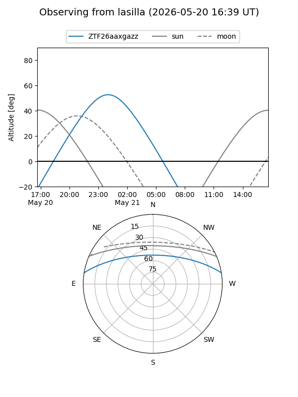
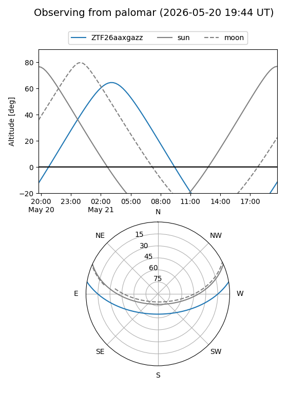

ZTF26aaxgazz
Target ZTF26aaxgazz at 2026-05-21 04:33
Aliases and brokers:
FINK: link
Lasair: link
ALeRCE: link
alt names
ZTF26aaxgazz (ztf,fink_ztf)
Coordinates:
equatorial (ra, dec) = 167.8071,+8.12681
equatorial (HMS+DMS) = 11:11:13.70,+08:07:36.53
galactic (l, b) = (246.9671,+59.61228)
Flags:
Photometry:
last ztfg=17.07
2 ztfg detections
Lightcurve
Visibility


Additional plots